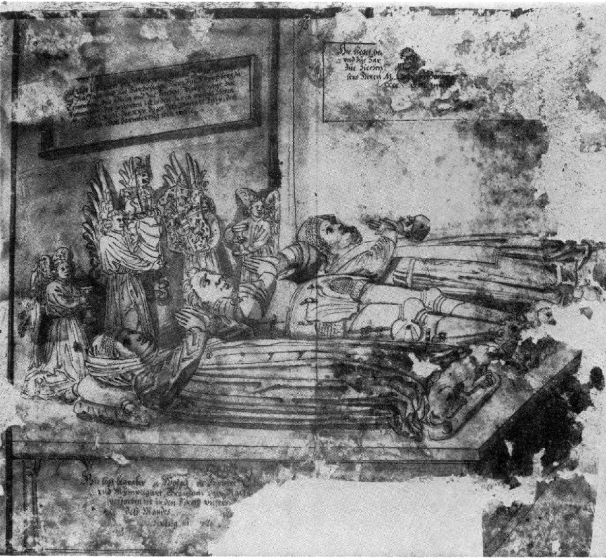

Dossier · Administration seigneuriale rhénane
Heinsberg, 1469 : les dettes du seigneur, en chiffre
Dans une liasse de la seigneurie de Heinsberg, entre Meuse et Rhin, deux lettres sont écrites d’un bout à l’autre avec des signes inventés. Elles ne parlent ni de guerre ni d’alliance, mais d’argent : un créancier à faire patienter, des florins à changer, un emprunt possible pour un rachat, un rendez-vous à Aix-la-Chapelle avec le receveur et les espèces. Elles sont lues ici à 99 % ; nous n’en avons trouvé aucun déchiffrement publié.
« Veuille être à Aix-la-Chapelle, toi et Hucking le [receveur], vendredi soir ou samedi matin, avec l’argent et toutes les espèces disponibles. »
Lettre 2, début (traduit de l’allemand du XVe siècle ; entre crochets, un mot probable, dont une lettre tachée est restituée).
Le texte complet des deux lettres, ligne par ligne, avec une traduction française, se trouve sur la page Documents.
Deux lettres dans une liasse
Le Landesarchiv de Rhénanie-du-Nord-Westphalie conserve à Duisburg les papiers de la seigneurie de Heinsberg. Le dossier B 2 du fonds AA 0582 réunit des lettres et pièces des années 1460–1469 : un procès en cour de Rome, des créances, des bénéfices, des nominations de Vögte (officiers locaux) à Heinsberg et à Gangelt. L’inventaire en ligne se termine par « deux lettres chiffrées au comte Johann. Affaires de dettes. » Ce sont les folios 120 et 121. Nous ignorons si ces derniers mots décrivent les deux lettres, ce qui voudrait dire qu’un archiviste en connaissait le sujet, ou le reste du dossier. Ni l’inventaire ni les feuillets ne donnent de déchiffrement. Nous n’avons trouvé ni édition ni analyse de ces pièces dans les répertoires consultés ; les revues d’histoire régionale restent à dépouiller.
Les lettres ne sont pas datées. L’année 1469 vient du classement : un résumé d’archiviste, au fol. 109, porte « Heinsberg 1469 », et les deux pièces sont rangées avec les lettres de cette année. C’est une date d’archiviste, probable, et non une date écrite par l’auteur.
La lettre 1 porte au verso l’adresse en clair : « À notre cher et fidèle Johann von Russeb[ruck] ». Au verso de la lettre 2, on lit seulement « … Johanne von … », près d’un sceau rouge ; même forme, même affaire, elle est très probablement adressée au même homme. L’ancien résumé du fol. 109 disait d’ailleurs « deux écrits chiffrés à Johann », sans plus : c’est l’inventaire moderne qui en a fait le « comte Johann ». Les lettres vont donc à l’un des hommes du seigneur. L’expéditeur ne se nomme pas. Il parle en « nous » et tutoie son correspondant, comme un seigneur écrit à son officier. Le seigneur de Heinsberg était alors le comte Johann II de Nassau-Sarrebruck, et l’attribution à lui est probable : rien dans le chiffre ne le nomme. Si les lettres sont antérieures à sa mort, sa femme Johanna, dame de Heinsberg par héritage, pourrait aussi en être l’autrice ou la co-autrice. La langue penche vers le comte sans le prouver : c’est un allemand de chancellerie du XVe siècle, de couleur francique rhénane, comme à Sarrebruck (mais aussi à Mayence ou dans le Palatinat), et non la langue écrite de la Meuse et du Rhin inférieur qu’emploierait un scribe local ; mais un secrétaire peut venir d’ailleurs.
Une seigneurie entre Juliers et Gueldre
Heinsberg est une petite ville de la vallée de la Rur, à une trentaine de kilomètres au nord d’Aix-la-Chapelle. Au XVe siècle, la seigneurie est prise entre le duché de Juliers et le « quartier supérieur » du duché de Gueldre, dont Roermond est le chef-lieu. Erkelenz, tout proche, est une enclave gueldroise au milieu des terres de Juliers.
La maison de Loon-Heinsberg y règne jusqu’au milieu du siècle. Un accord de 1420 promet à Johann II de Loon-Heinsberg un quart du duché de Juliers, qu’il recueille en 1423. Son fils, Jean de Heinsberg, est prince-évêque de Liège de 1419 à 1455–1456 ; il meurt en 1459, après avoir gouverné Heinsberg comme tuteur pendant la minorité de l’héritière. La branche aînée s’éteint en ligne masculine en 1448 avec Johann IV. Sa fille Johanna, héritière, épouse en 1456 le comte Johann II de Nassau-Sarrebruck (certaines généalogies l’appellent Johann III). Le comte se dit désormais seigneur de Heinsberg, de Diest et de Sichem, et reçoit en 1460 d’importants fiefs de l’Église de Liège.
L’héritage n’est pas un bloc. Une grand-tante de Johanna, Maria de Loon-Heinsberg, fille de Johann II, avait épousé en 1440 un autre comte Johann, de la branche de Nassau-Siegen (Dillenburg), qui tenait de ce mariage Gangelt, Waldfeucht, Vught et le pays de Millen. Le différend entre les deux héritages ne sera réglé qu’en 1499. Des Loon d’une branche cadette, comme Wilhelm von Loen, comte de Blankenheim, apparaissent aussi dans la liasse : en 1464, il nomme le Vogt de Gangelt, signe que les droits sur cette place restaient enchevêtrés.
Né le 4 avril 1423, le comte de Nassau-Sarrebruck gouverne aussi le comté de Sarrebruck, sur la Sarre, à quelque 200 km de là. Ses terres de la Meuse et du Rhin inférieur sont donc administrées par des officiers : Vögte, receveurs, secrétaires. La liasse B 2 est faite en grande partie de leur correspondance.
1469 : un veuvage et des frontières troublées
Johanna de Loon-Heinsberg meurt en 1469 ; nous n’avons pas trouvé le jour. C’est par elle que le comte tenait Heinsberg, et l’héritage revient à leurs deux filles, Elisabeth, née en 1459, et Johanna, née en 1464. À quel titre exact le comte administre ensuite la seigneurie, comme père et tuteur ou comme usufruitier, nous ne l’avons pas trouvé. Il se remarie dès 1470 avec Elisabeth de Wurtemberg et meurt en juillet 1472, en voyage dans le Wurtemberg (le 15 ou le 25 juillet selon les sources). La même année, sa fille Elisabeth est fiancée à Wilhelm, fils et héritier du duc de Juliers-Berg ; le mariage a lieu probablement en 1474. Elisabeth meurt sans enfant en 1479, et Wilhelm, devenu duc, rachète en 1484 les droits de sa belle-sœur Johanna. Heinsberg devient alors un Amt, une circonscription du duché de Juliers.

Autour de Heinsberg, la fin des années 1460 est agitée. En Gueldre, le duc Arnold d’Egmond a été capturé en janvier 1465 par son propre fils Adolf. Charles le Téméraire, duc de Bourgogne depuis juin 1467, a écrasé la révolte de Liège : la ville est prise et pillée le 30 octobre 1468, puis incendiée à partir du 3 novembre. Il prend ensuite parti dans la querelle gueldroise : Adolf est emprisonné par les Bourguignons en février 1471, et Arnold engage son duché au duc de Bourgogne le 1er décembre 1471 pour 300 000 florins. À Juliers, le duc Gerhard règne depuis 1437 mais n’est plus en état de gouverner depuis 1455 environ ; sa femme Sophie de Saxe-Lauenburg tient la régence.
La liasse garde la trace de cette inquiétude : en 1469, une lettre demande à Johann Hucking et à un autre officier de s’informer d’une rumeur selon laquelle Kaster, Bergheim et Grevenbroich, places du duché de Juliers, auraient été trahies. Nos deux lettres chiffrées ne parlent pourtant d’aucun de ces événements. Nous ne savons pas si elles ont été écrites avant ou après la mort de Johanna, et nous ne pouvons les relier à aucun d’eux.
Les hommes des lettres
- Johann von Russebruck, le destinataire. L’inventaire de la liasse nomme vers 1466 un « secrétaire Johann van Russebruck », et en 1468 un Johann von Russebruck destinataire d’un brouillon de lettre. C’est très probablement le même homme. Les deux lettres le chargent de négocier, de rassembler l’argent et de garder Heinsberg : il agit comme l’homme de confiance du seigneur sur place. Nous ne savons rien d’autre de lui.
- Johann Hucking. Il demande un bénéfice ecclésiastique à Heinsberg vers 1462–1463, ce qui fait penser à un clerc ; en 1469, il reçoit avec un autre officier la lettre sur la rumeur de trahison. Il est nommé avec Russebruck au fol. 112v de la même liasse. La lettre 2 l’appelle « Hucking der rent[m]eister », le receveur : c’est la seule mention de ce titre que nous ayons lue, et la lecture est probable, car une lettre est tachée.
- Krumel, le créancier de la lettre 1, qu’il faut convaincre d’attendre ou de se laisser rembourser, et que la lettre 2 fait venir à Aix-la-Chapelle. Nous n’avons trouvé aucune autre mention de lui ; on ignore qui il est.
- Godart von [Flodrop], à qui le seigneur songe à emprunter pour un rachat. Le nom est lui-même probable : son dernier signe est illisible, et la lettre p n’a pas d’autre exemple dans les deux lettres ; Flodrop est complété d’après le nom de famille. Le rattacher à la famille de Vlodrop (Flodorp), maison noble de Gueldre, est une hypothèse appuyée par la liasse : on y trouve en 1460 un emprunt auprès d’un Godart von Flodorp, et au fol. 115 une lettre adressée à un Wilhelm van Flodorp. Le prénom revient souvent dans la famille : en 1427, une même charte nomme un Godart von Vlodorp doyen à Aix-la-Chapelle, un autre Vogt de Roermond, et un troisième parmi les vendeurs. On ignore lequel, ou quel descendant, est celui de 1469.
- Le Vogt de Roermond, autre interlocuteur d’argent de la lettre 1. La lettre ne le nomme pas. À Roermond, le voogd est un officier héréditaire de la famille de Vlodrop, qui tient sa charge en fief du duc de Gueldre ; d’après un site d’histoire locale, Willem van Vlodrop l’a exercée de 1447 à 1493, et il tenait aussi Wassenberg, voisine de Heinsberg. C’est donc probablement lui, et non Godart, que vise la lettre. Il pourrait être aussi le Wilhelm van Flodorp du fol. 115 : le rapprochement reste à vérifier sur la pièce.
Lettre 1 : faire patienter un créancier
La première lettre (48 lignes chiffrées, recto et verso) répond à un rapport de Russebruck. Le seigneur doit de l’argent à Krumel, qui a parlé à son officier « en chemin ». Il propose deux issues.
« … s’il voudrait laisser l’affaire en suspens un [mois] ou six semaines, honnêtement et de bonne foi, et la différer ; mais si nous ne pouvions nous accorder sur le délai dans lequel nous lui rendrions son argent, qu’il le prenne sans [préjudice], qu’il nous rende nos lettres et nous donne aussitôt une lettre et une quittance sous son sceau, afin que nous soyons garantis. »
Lettre 1, fol. 120r, l. 6–12 (entre crochets, des mots probables).
Vient ensuite la question de la monnaie. Les lettres d’obligation de Krumel exigent un remboursement en florins des Électeurs « frappés avant la date de la lettre » (les deux dernières lettres de Korfursten, au bord de la page, et le u de datum sont restitués ; la formule revient entière plus bas). Russebruck craint que le seigneur ne doive les changer à perte. Celui-ci fait proposer un supplément de quatre florins sur cent, payés en autre or et autre monnaie, « comme les changeurs » (probablement au taux du change), ou au moins des florins aussi bons que les anciens, avec un supplément pour les pièces plus faibles, et que tout cela soit écrit dans la lettre dont il a été question.
Russebruck peut aussi faire valoir que le seigneur serait mieux disposé envers Krumel s’il agissait loyalement, car ses lettres d’obligation sont rédigées « avec beaucoup de périls » (mit fast faren), c’est-à-dire de clauses dangereuses, qu’une rencontre permettrait de lever.
La lettre se termine sur d’autres prêteurs. Russebruck devait dire quelles obligations et quelles garanties demandent « ceux qui nous prêtent maintenant de l’argent », et si Godart von [Flodrop] prêterait, « s’il en était besoin », « pour le rachat » (losunge). Le mot désigne couramment le rachat d’un bien ou d’un droit engagé ; la lettre ne dit pas lequel. La même liasse garde d’ailleurs, en 1461, le rachat de l’office engagé de Geilenkirchen, à une dizaine de kilomètres : c’est un exemple du genre d’affaire, non l’objet de la lettre. Russebruck n’en a rien écrit ; le seigneur le relève et lui demande « toute la situation ». Enfin, il doit parler au Vogt de Roermond pour que, à ce moment-là, il ne les laisse pas sans l’argent, ou ne les presse pas pour le sien : la phrase admet les deux sens, et la suite (« nous pourrions plus tard nous accorder mieux que nous ne le pouvons maintenant ») fait plutôt penser à un créancier qu’on veut faire patienter.
Lettre 2 : rendez-vous à Aix-la-Chapelle
La seconde lettre, plus courte (10 lignes), fixe un rendez-vous. La voici, à un mot près.
« Cher fidèle. Veuille être à Aix-la-Chapelle, toi et Hucking le [receveur], vendredi soir ou samedi matin, avec l’argent et toutes les espèces disponibles ; et s’il y a [quelques] lettres qu’il faut avoir là-bas, apporte-les. Et dis à Krumel qu’il y vienne aussi. Nous voulons, si Dieu le veut, y avoir notre envoyé au jour dit ; sachez vous régler en conséquence. Et mettez bon ordre à Heinsberg, afin qu’il n’arrive aucun dommage pendant l’absence. Si […] est là, dites-lui qu’il chevauche avec vous. »
Lettre 2, fol. 121r (entre crochets, deux mots probables ; […] un nom ou deux mots non résolus).
Les deux lettres parlent du même créancier, du même argent et des mêmes lettres d’obligation : la seconde semble venir après la première, quand on est passé de la négociation au paiement. C’est une déduction de lecture, non un fait daté. Aix-la-Chapelle, ville d’Empire, est proche ; pourquoi ce lieu a été choisi pour régler l’affaire, on l’ignore.
Les florins des Électeurs
Le « florin des Électeurs » (Korfursten gulden) est le florin du Rhin, la pièce d’or commune des quatre Électeurs rhénans (Mayence, Trèves, Cologne et le comte palatin), unis dans une ligue monétaire depuis le 8 juin 1386. C’est la grande monnaie d’or et de compte du Rhin ; entre Meuse et Rhin circulent aussi d’autres florins, de Bourgogne ou de Gueldre. Son titre n’a cessé de baisser : 23 carats en 1386, 22 carats en 1409, puis un titre théorique de 19 carats de 1420 à 1490.
Exiger des florins « frappés avant la date de la lettre », c’est donc se protéger contre des pièces plus récentes et plus faibles. Le supplément de 4 % compenserait le paiement en d’autres espèces que ces vieux florins. Cette explication est la nôtre ; elle est cohérente avec l’histoire de la monnaie, mais la lettre ne donne ni le montant de la dette ni le titre des pièces.
Pourquoi chiffrer une affaire d’argent ?
La lettre ne le dit pas. On peut proposer une raison, qui reste une hypothèse : un seigneur qui cherche à différer une dette, à emprunter ailleurs et peut-être à racheter un gage révèle qu’il manque d’argent. Si la lettre tombait entre les mains d’un créancier, d’un prêteur ou d’un voisin, elle affaiblirait sa position dans la négociation, et peut-être son crédit. Les messagers traversaient en outre des terres agitées ; et chiffrer pouvait n’être qu’une habitude de la chancellerie.
Le procédé est simple. C’est un alphabet de signes à substitution simple : chaque lettre de l’allemand est remplacée par un signe inventé (cercle, V renversé, 8, signe en forme de q ou de 2, 4 barré, T, crochet, carré à deux points, petites coupoles…), toujours le même. Une vingtaine de signes suffisent. Les mots restent séparés. Le b a son signe, un trait droit, très proche de celui du d, un trait à pied : les transcriptions les confondent souvent, et nous avons lu d ou b selon le sens. Un même signe sert pour h et ch (il n’y a pas de signe pour c), un autre pour u et v, qui ne sont alors que deux formes d’une même lettre. Nous n’avons vu ni mots codés ni signes multiples sûrs pour une même lettre.
Ce n’est pas une rareté absolue. L’usage du chiffre se répand dans les chancelleries de l’Empire depuis le XIVe siècle, et l’on connaît, par exemple, des chiffres de la ville de Nuremberg au XVe siècle. Mais le nôtre est rudimentaire au regard de ce qui se fait en Italie : dès 1401, une clé de Mantoue donne plusieurs signes à chaque voyelle, selon l’interprétation courante pour brouiller les fréquences (le but en est discuté). Un tel alphabet protège contre un lecteur curieux, non contre un homme patient : la clé se retrouve à partir des mots les plus fréquents. Combien de lettres seigneuriales chiffrées de ce temps subsistent dans les archives rhénanes, on l’ignore ; nous n’en avons pas trouvé de recensement. Pour le catalogue de Daniel Bourdeau, ces deux lettres sont plus anciennes que presque tout ce qu’il recense pour l’Empire.
Comment nous les avons lues
- Transcription. Deux transcriptions à l’aveugle, faites à partir des photographies par deux agents d’IA distincts, chacun avec ses propres codes : 2 299 signes pour la lettre 1 et 372 pour la lettre 2 dans la première passe, 2 242 et 359 dans la seconde ; les écarts portent surtout sur des traits verticaux. Les deux agents sont des instances du même modèle : leurs erreurs ne sont donc pas forcément indépendantes. L’agent qui coordonnait le travail avait vu les images des deux lettres en préparant les découpes, et lu la première passe avant que la seconde soit faite ; c’est déclaré dans le préenregistrement.
- Préenregistrement. Avant toute recherche de clé, nous avons fixé par écrit, et figé par une empreinte numérique, la règle du jeu : la clé serait cherchée sur la lettre 1 seulement, la lettre 2 étant tenue à l’écart pour un test unique.
- La clé. Elle est sortie de la lettre 1 par les mots courts et fréquents : und (une trentaine de fois), uns (20 fois), die, daz, du, wir. La lettre s’est lue d’un coup. La langue est l’allemand de chancellerie du XVe siècle (premier haut-allemand moderne), de couleur francique rhénane (daz, zu, zit, uf).
- Le test préenregistré. La clé, une liste de mots et le script de mesure ont été scellés, puis appliqués une seule fois à la lettre 2. Mesure : la part des lettres du déchiffrement qui forment des mots de la liste. Résultat : 0,58 (0,55 sur la seconde transcription), contre 0,07 au plus pour 200 clés obtenues en mélangeant les valeurs de la vraie clé. Le seuil de réussite fixé d’avance était 0,85 : le verdict préenregistré est donc partiel. Nous l’attribuons à la liste de mots, faite du vocabulaire de la lettre 1 et d’une liste écrite d’avance, à laquelle manquent les mots nouveaux de la lettre 2, comme fritag, samszdag, abent, morgen ou Ache (Aix) ; nous ne l’avons pas recalculé. Nous donnons ce résultat tel quel. Ce test montre seulement que la clé fait beaucoup mieux que le hasard. La preuve de la lecture est ailleurs : pour un texte aussi long, aux mots séparés, une substitution simple n’admet qu’une solution, et les deux lettres se lisent d’un bout à l’autre.
- Deux écarts au protocole. La liste écrite d’avance et la condition préalable au test supposaient un texte de type colonais (ripuaire) ; le texte s’est révélé de couleur francique rhénane. Nous avons tenu la condition pour remplie au sens large d’« allemand rhénan », et cette liste mal ajustée explique une partie de la faible couverture. Le second écart est celui de la transcription, dit plus haut.
- Lecture stricte. Un mot est « sûr » s’il se lit sans doute, « probable » s’il reste un doute sur une lettre, « restitué » s’il manque une lettre sur la page ; le pourcentage compte les mots sûrs et probables. Lettre 1 : 535 mots sûrs, 6 probables, 2 restitués, 3 non résolus sur 546, soit 99,1 % (99,5 % avec les deux mots restitués). Lettre 2 : 85 sûrs, 2 probables, 1 non résolu sur 88, soit 98,9 %.
- Revue. Une relecture par un autre agent d’IA a refait le déchiffrement avec son propre programme (549 et 90 mots : l’écart avec 546 et 88 tient au découpage, mots coupés en fin de ligne et signe taché isolé), vérifié douze passages sur les photographies et jugé les deux lectures sûres ; ses corrections ont été reprises. Elle contrôle l’application de la clé et la lecture, non la transcription elle-même. Aucun paléographe n’a encore relu le texte.
Ce qui reste incertain
- L’expéditeur : le comte Johann II de Nassau-Sarrebruck est probable, non prouvé ; Johanna n’est pas exclue.
- La date : 1469 vient du classement de la liasse, pas des lettres.
- Quatre mots restent non résolus : trois dans la lettre 1 (l. 18 et 35) et un dans la lettre 2 (l. 9, « dame », un nom ou « dan me »). Huit mots sont probables (six dans la lettre 1, dont Flodrop ; deux dans la lettre 2). Trois mots ont des lettres restituées : Korfurst[en] et dat[u]m dans la lettre 1, rent[m]eister dans la lettre 2 (compté parmi les probables).
- Le sens de la phrase sur le Vogt de Roermond : prêteur qu’il ne faut pas voir se dérober, ou créancier qu’il faut faire patienter ; la seconde lecture nous paraît la plus probable.
- On ignore le montant de la dette, l’identité de Krumel et l’objet du rachat.
- Les photographies ne sont pas publiées : seuls nos transcriptions, notre lecture et notre traduction le sont. L’illustration est un dessin de 1632, étranger à la liasse.
Références
Landesarchiv Nordrhein-Westfalen, Abteilung Rheinland (Duisburg), AA 0582 Herrschaft Heinsberg, Akten, B 2 (1460–1469), fol. 120r–121v. Inventaire : Archivportal-D, notice « AA 0582, B 2 ». Avec nos remerciements au Landesarchiv NRW.
Photos : Elke Schwedmann (WGfF, Bezirksgruppe Ruhr), prises en salle de lecture du Landesarchiv NRW pour ce dossier, le 17 novembre 2026. Conservées pour l’étude, non reproduites.
Heinrich Dors, dessin du tombeau du comte Johann II (« III ») de Nassau-Sarrebruck et de ses épouses Johanna et Elisabeth, 1632, dans Genealogia oder Stammregister der durchläuchtigen hoch- und wohlgeborenen Fürsten, Grafen und Herren des uhralten hochlöblichen Hauses Nassau samt etlichen konterfeitlichen Epitaphien ; Wikimedia Commons, fichier « Grabtumba des Grafen Johann III. von Nassau-Saarbrucken und seiner Germahlinnen Johanna und Elisabeth (Dors).png » (nom du fichier, graphie d’origine), fichier ↗ ; domaine public (PD-old-70).
Catalogue de Daniel Bourdeau (cyphersolver.com), fiche n° 1618 ; demande d’archive ar-776. Lecture proposée à son dépôt (cible heinsberg1469).
Ernst Joachim, « Johann II. von Nassau-Saarbrücken », Allgemeine Deutsche Biographie, t. 14, 1881, p. 262–263, et notice ADB de Wilhelm IV de Juliers-Berg (deutsche-biographie.de) ; Archivportal-D, LAV NRW AA 0579 Nr. 88 (charte du 18 juin 1427) ; articles « Herrschaft Heinsberg », « Arnold von Egmond », « Gerhard (Jülich-Berg) », « Rheinischer Gulden » de Wikipédia en allemand, « Maria of Looz-Heinsberg » en anglais et « Sac de Liège » en français ; historique des voogden de Roermond (historieroermond.nl) ; Kreis Heinsberg, histoire du district (kreis-heinsberg.de).
Anne-Simone Rous, « Geheimschriften in sächsischen Akten der Neuzeit », Neues Archiv für sächsische Geschichte 82, 2011, p. 243–253, DOI 10.52411/nasg.Bd.82.2011.S.243-253 (sur l’usage du chiffre dans les chancelleries de l’Empire) ; « Geheimschriften », Lexikon des Mittelalters, t. IV, Munich, 1989, col. 1172–1174 (cité d’après Rous) ; Wagner, « Nürnbergische Geheimschrift im 15. und am Beginn des 16. Jahrhunderts », Archivalische Zeitschrift 9, 1884 (non consulté) ; sur la clé de Mantoue de 1401 : David Kahn, The Codebreakers, 1967 ; article « Francesco I Gonzaga » de Wikipédia ; ciphermysteries.com, « Fifteenth century cryptography » (2016).
.png){kind=link}